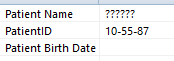
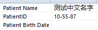

Dicom文件的默认字符集编码为ISO-IR6，这种字符集是不支持中文的，当使用Dicom工具修改病人姓名后，名字会成乱码而无法正常显示，如下图：

知道了原因就知道解决办法了，修改Dicom的字符集（0008，0005标签，名字叫SpecificCharacterSet），把该值改成支持中文的即可，如GB1830、ISO_IR 192，再把病人姓名改为中文，可正常显示，如下图：

具体代码如下：
import pydicom
ds = pydicom.dcmread(r'0015.dcm')
print(ds.PatientName)
# ds.SpecificCharacterSet = 'GB18030'
ds.SpecificCharacterSet = 'ISO_IR 192'
ds.PatientName = '测试中文名字'
ds.save_as('out.dcm')